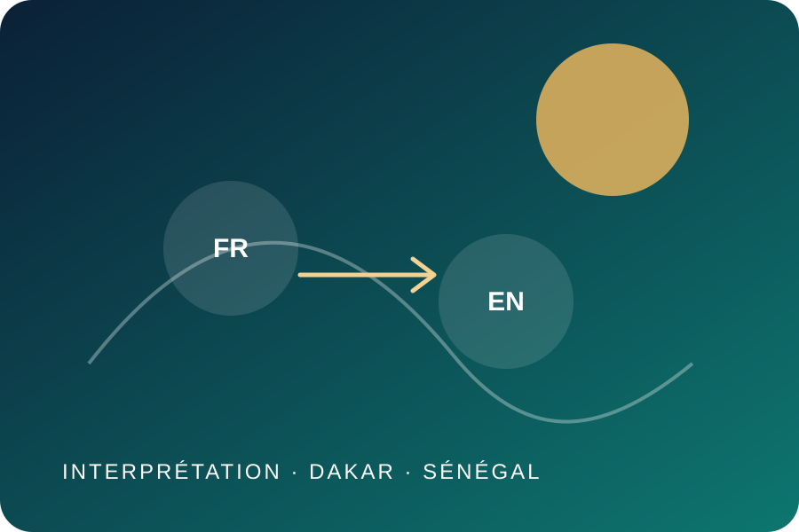
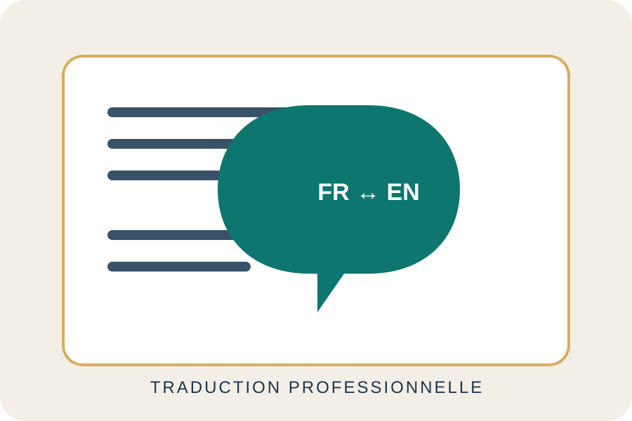
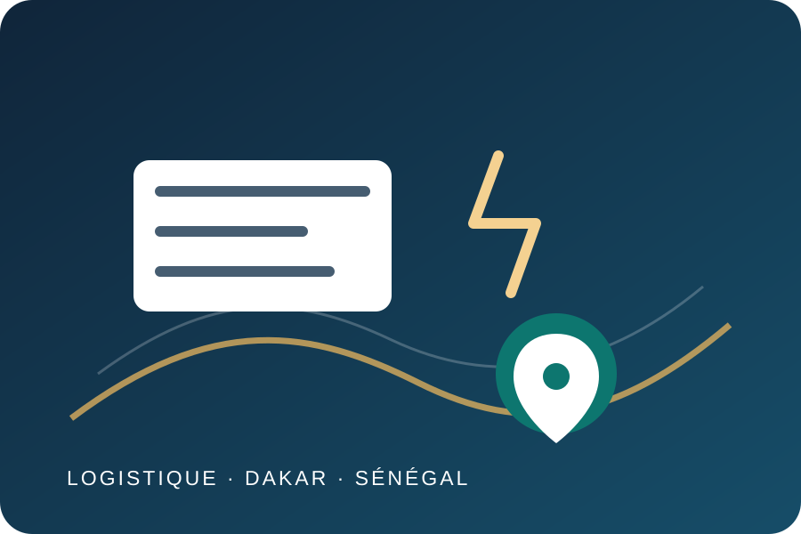
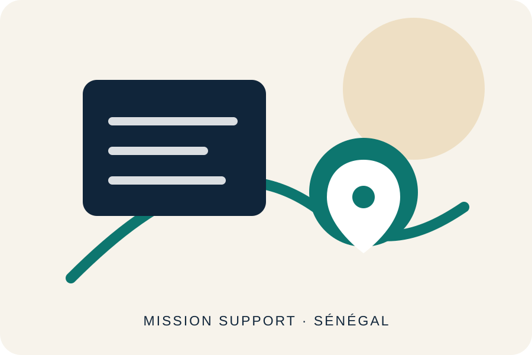

Dakar · Ouakam · Sénégal · International
Les mots ouvrent les portes. Les missions avancent.
Senegalese Consulting & Services facilite vos missions au Sénégal grâce à une combinaison de communication professionnelle, de traduction et de coordination locale.
Nos expertises
Un partenaire local pour vos échanges et vos missions au Sénégal
Une offre claire, pensée pour les entreprises, organisations, consultants, délégations et équipes internationales qui ont besoin d’un interlocuteur fiable sur le terrain.

Interprétation
Réunions, conférences, négociations et missions officielles en français, anglais et wolof.

Traduction professionnelle
Documents professionnels, techniques, commerciaux et administratifs avec une attention particulière au contexte.

Logistique de mission
Transport, logement et installation GPS pour faciliter les déplacements de vos équipes.

Présence locale
Votre équipe garde le cap. Nous facilitons le terrain.
Depuis Dakar, nous préparons avec vous les besoins linguistiques et pratiques de votre mission : langues, dates, déplacements, hébergement et coordination locale.
Pourquoi SCS
Clarté, proximité et compréhension du contexte local.
Notre approche combine la communication multilingue et l’accompagnement pratique pour réduire les frictions avant et pendant vos missions.
Communication
Faciliter les échanges entre interlocuteurs locaux et internationaux, avec un langage adapté au contexte.
Coordination
Centraliser les besoins de terrain pour vous permettre de vous concentrer sur vos objectifs.
Réactivité
Un point de contact local pour préciser rapidement les besoins d’une mission au Sénégal.
Préparer votre mission
Dates, langues, lieu et besoins : envoyez-nous les éléments essentiels.
Nous pouvons ensuite préciser le périmètre d’interprétation, de traduction et de logistique adapté à votre mission.
FAQ
Questions fréquentes sur nos services à Dakar
Quels services proposez-vous ?
Interprétation, traduction professionnelle et accompagnement logistique de missions au Sénégal.
Dans quelles langues intervenez-vous ?
Français, anglais et wolof, selon le contexte de la mission. D’autres besoins linguistiques peuvent être étudiés sur demande.
Intervenez-vous hors de Dakar ?
Oui, nous pouvons organiser l’accompagnement de missions au Sénégal selon le périmètre et les besoins communiqués.
Comment demander un devis ?
Envoyez vos dates, lieu, langues et besoins par WhatsApp ou via la page Contact.